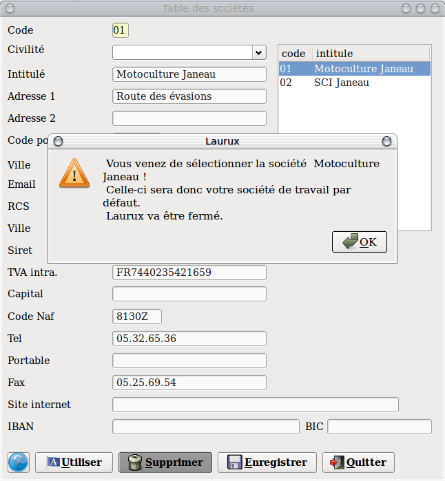

~ Comptabilité Laurux ~

~ Comptabilité Laurux ~ |
|
|
|

Note : Un clic sur le bouton " Enregistrer " enregistre la société dans la base et remet tous les champs à blanc.
Dans la partie droite de l’écran vous avez les sociétés déjà crées. En cliquant sur une de celles-ci vous aurez le détail dans la partie gauche. Positionnez-vous dans le champ que vous souhaitez changer et saisissez vos modifications.
Pour créer une nouvelle société il suffit de se positionner dans la zone code, de renseigner la zone avec un code disponible, puis de remplir l’ensemble des autres champs.

Pour utiliser une societe de travail par defaut, selectionner celle-ci puis cliquez sur le bouton "Utiliser"& . Un message vous confirmera votre selection. Validez par OK . Des lors, le numero et l'intitule de la societe s'afficheront dans l'entete de votre menu.
N’oubliez pas d’enregistrer votre travail avant de quitter le programme.
----------------------------------------------------------------------------------------------------------------------